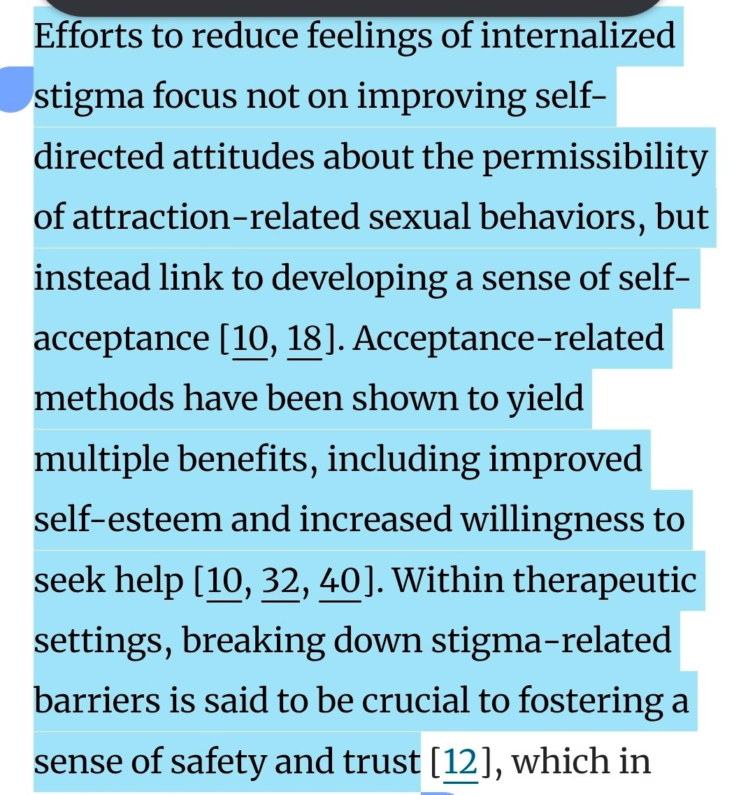

“不能因无行为而治罪”不等于“公共伦理不能评价欲望对象”。
前者我同意。法律处罚当然要看行为。但公共伦理评价的对象不只是行为结果，也包括欲望进入关系和公共承认后，会怎样改变他者的位置。老师对学生、医生对病人、上级对下属的越界欲望，即使没有行为，也会被要求警惕和约束，因为它涉及不对等关系。问题不只是“有没有做”，还包括“这种关系能不能被正常化”。
儿童相关议题更明确。儿童无法形成有效同意，也无法承担后果，所以以儿童为对象的欲望不能被包装成普通偏好或身份。
你图里的材料说的是治疗语境里的降低羞耻、促成求助、建立信任、维持边界。它支持不了公共语境中的正常化问题。法律不惩罚内心不等于公共伦理必须沉默。好比种族歧视问题一样，法律当然不会惩罚一个没有种族歧视行为的“心理层面的”种族歧视者，但是种族歧视心理是不能在公共伦理场域被正当化的👁️💧

前者我同意。法律处罚当然要看行为。但公共伦理评价的对象不只是行为结果，也包括欲望进入关系和公共承认后，会怎样改变他者的位置。老师对学生、医生对病人、上级对下属的越界欲望，即使没有行为，也会被要求警惕和约束，因为它涉及不对等关系。问题不只是“有没有做”，还包括“这种关系能不能被正常化”。
儿童相关议题更明确。儿童无法形成有效同意，也无法承担后果，所以以儿童为对象的欲望不能被包装成普通偏好或身份。
你图里的材料说的是治疗语境里的降低羞耻、促成求助、建立信任、维持边界。它支持不了公共语境中的正常化问题。法律不惩罚内心不等于公共伦理必须沉默。好比种族歧视问题一样，法律当然不会惩罚一个没有种族歧视行为的“心理层面的”种族歧视者，但是种族歧视心理是不能在公共伦理场域被正当化的👁️💧

@shio_vinyl 还是那句：让他们接受自己是恋童的不等同接受对儿童的相关行为。
欲望本身不应伦理化没错，没人应因自己不能选择的内心状态而被伦理批判，行为本身才是批判对象。 https://t.co/xNHGYSmzgb
欲望本身不应伦理化没错，没人应因自己不能选择的内心状态而被伦理批判，行为本身才是批判对象。 https://t.co/xNHGYSmzgb